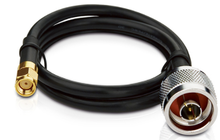

Home / Detection Electronics / Raspberry Pi Receivers / Outdoor
Detection Electronics · Outdoor kit
Raspberry Pi Long-Range Outdoor Permanent Receiver
$649 / $729 Hardware Only / Ready-to-Run
Ready-to-Run
$729
Same hardware. We load the receiver image before it ships.
Extra business day. Ships from us after we load it.
- Raspberry Pi 5 (4 GB) permanent outdoor receiver kit
- IP66 weatherproof box with a clear lid
- Mast-mount 9 dBi 1090 with N-female jack. SMA-to-N jumper included
- Outdoor stick does not screw onto the radio. Power brick is indoor
- No battery. No official indoor case. Weekend orders ship Monday
Hardware Only ships from US shops after payment. Ready-to-Run ships from us after we load the image. Sold by Dark Sky Systems LLC. Card via Stripe.